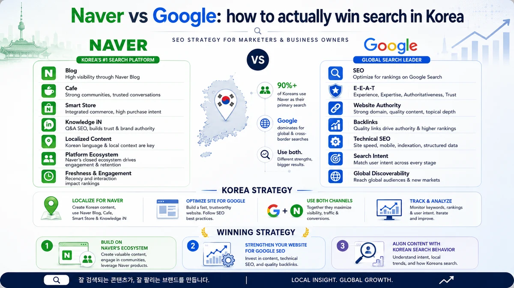

Naver vs Google: how to actually win search in Korea
Most brands entering Korea ask us the wrong first question — "Naver or Google?" The honest answer is rarely one or the other. Here's how we decide where to put the budget, based on what we see in real Korean campaigns.
Korea is one of the few large markets where Google is not the default starting point for every search. Naver — a homegrown portal — still owns a huge share of informational and local queries, while Google has been climbing steadily, especially with younger users and for global or technical topics. Treating Korea like a Google-only market is the most common and most expensive mistake we see.
How the two engines actually differ
Google rewards a well-structured, authoritative website: clean technical SEO, content that matches search intent, and trustworthy signals. Naver behaves more like a curated content ecosystem. Its results lean heavily on Naver's own properties — Blog, Café and Knowledge-iN (지식iN) — so visibility often comes from publishing and earning presence inside Naver, not just from ranking your own domain.
- Search intent splits by topic. Reviews, how-tos and local recommendations often start on Naver; comparisons, B2B research and global brands skew toward Google.
- Content lives in different places. On Google you optimise your site; on Naver you also build presence across Blog and Café in natural Korean.
- Trust is shown differently. Korean buyers read a lot of reviews before purchasing, so social proof and authentic content matter as much as rankings.
- Mobile is the default. Both engines are mobile-first in Korea, so speed and a clean mobile layout are table stakes.
So where should you invest?
We start by looking at where your actual buyers search, not by picking a favourite engine. For a beauty or food brand chasing consumer demand, Naver's Blog and Café presence is usually unmissable. For a B2B or SaaS company, Google typically carries more qualified intent. Most brands need a weighted mix — and the weighting should come from keyword data in both engines, not assumptions.
One rule holds in either case: nothing we publish is machine-translated. Korean audiences spot awkward, translated copy instantly, and it quietly erodes trust. Native-language content is the baseline, not an upgrade.
A note on doing it the durable way
It can be tempting to chase quick visibility with low-quality blog spam or paid placements that look organic. Both Google and Naver have grown better at filtering manipulation, and a cleanup costs far more than doing it properly. We build presence the slow, safe way — real content, real reviews, real authority — so it keeps compounding instead of collapsing.
Frequently asked questions
Do I really need both Naver and Google?
Usually yes, but rarely 50/50. We weight the effort using search-volume and intent data from both engines for your specific keywords and audience.
Can I just translate my existing English content?
We don't recommend it. Korean readers notice translated copy quickly. Native writing performs better and protects your brand's credibility.
How long until I see traction in Korea?
Like any SEO, it compounds — typically three to six months for meaningful movement, with stronger gains as your Naver and Google presence matures.
Thinking about entering Korea?
Get a free, no-obligation review of your Korea search opportunity across both Naver and Google. We'll show you where the demand is and how to capture it.
Chat on WhatsApp →